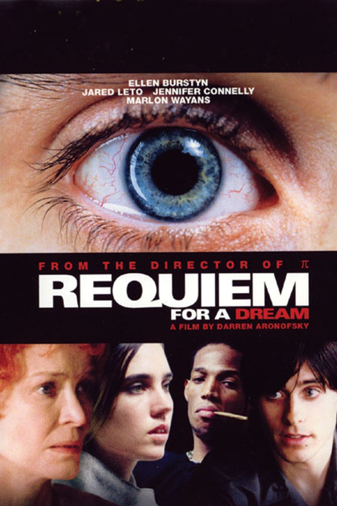
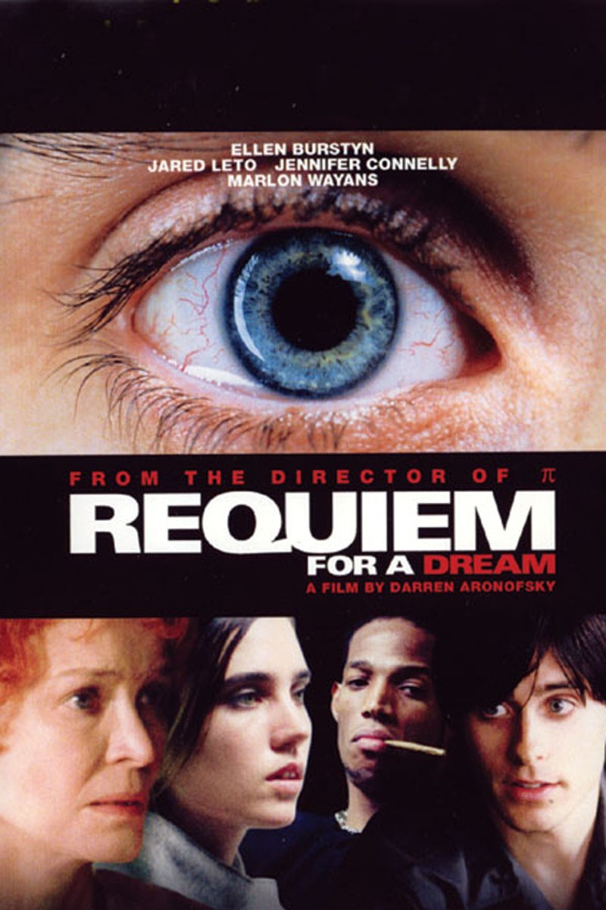
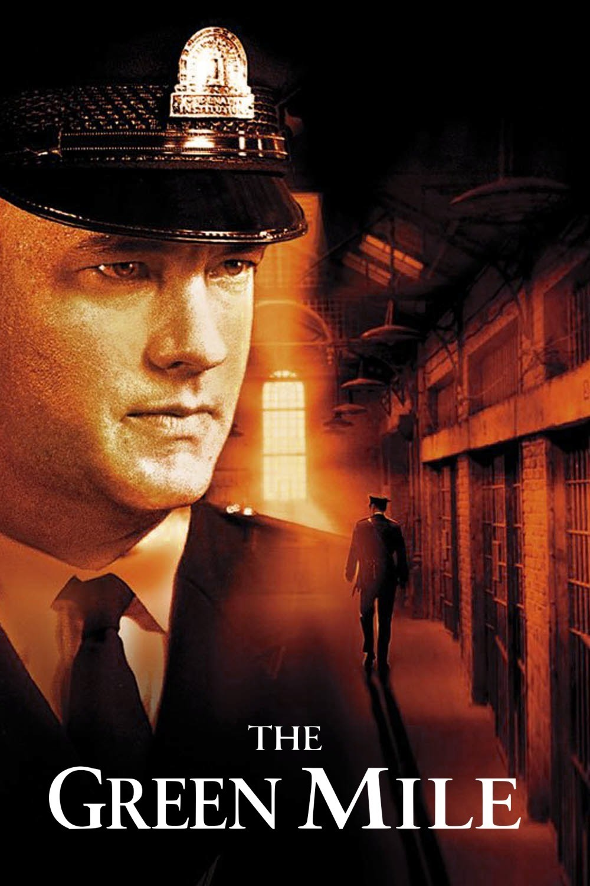
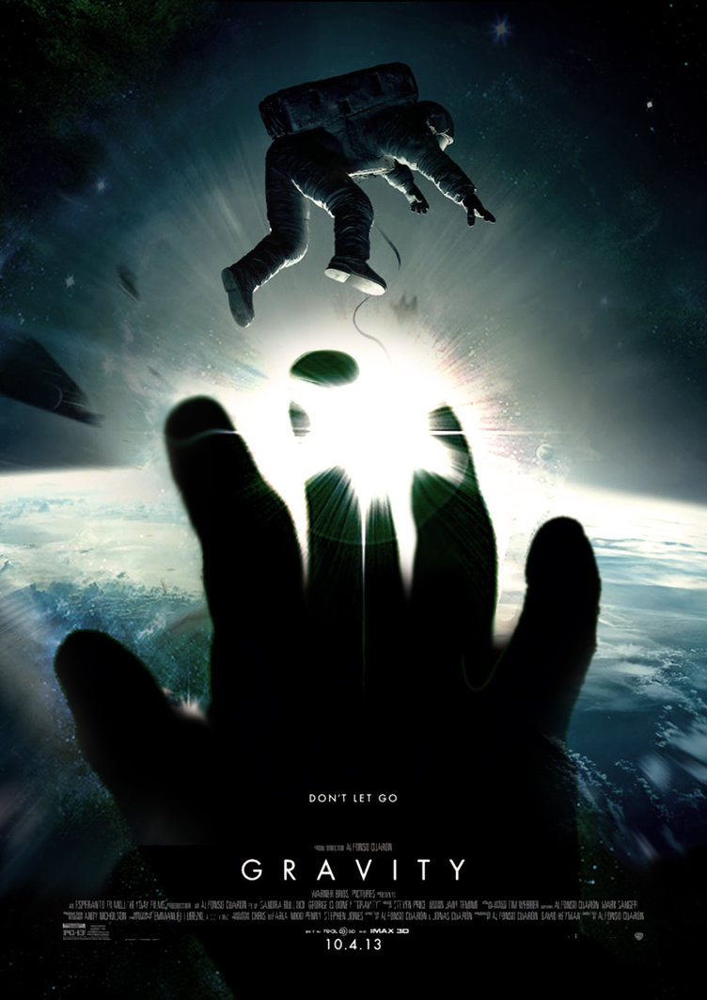

Requiem for a Dream(2000)
Requiem for a Dream(2000)
Do you like drugs kids? Do you think drugs are FUN?! Watch this movie.
Drugs are not fun.
Requiem for a Dream tells the story of four addicts as they break down
mentally, physically, and emotionally. Really well done cinematography that
makes you feel just as strung out and confused as the main characters. Very unique. Very good

The Green Mile(1999)
The Green Mile(1999)
When was the last time you had a good cry?
If it’s been a while, watch this. If The Green Mile doesn’t at least
make a single tear drop stream down your cheek, you must be as emotionally open
as a brick wall with deep seeded issues from its childhood

Gravity(2013)
Gravity(2013)
This movie is stupid.
I was promised George Clooney would be in it. But NOOOO
that dude gets sucked into space like 10 minutes in and the rest of the movie
is just Sandra Bullock alone in orbit. WEAK.
Who wants to watch that?! Actually apparently a lot of people
because I’m pretty sure it did well at the box office.